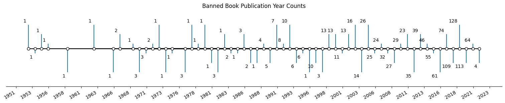

Count of Publishers of Banned Books.The publishing industry is dominated by 5 major publishing houses, with the rest of publishers deemed "independent" or not affiliated with these major houses. This is the distribution of each of those houses in our banned book data set.
Top 10 Genres of Banned Books. Each book in the dataset is tagged with a genre category. These are the 10 most common genres and their counts.

Time Line of Publication Year. These are the publication years of banned books expressed as number of banned books published over time. Many books that are currently banned have been published within the last ten years.